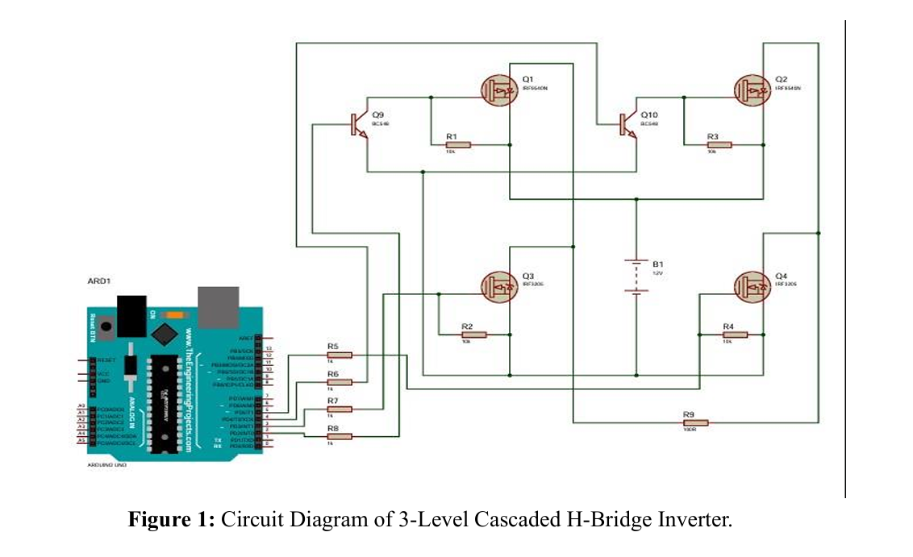
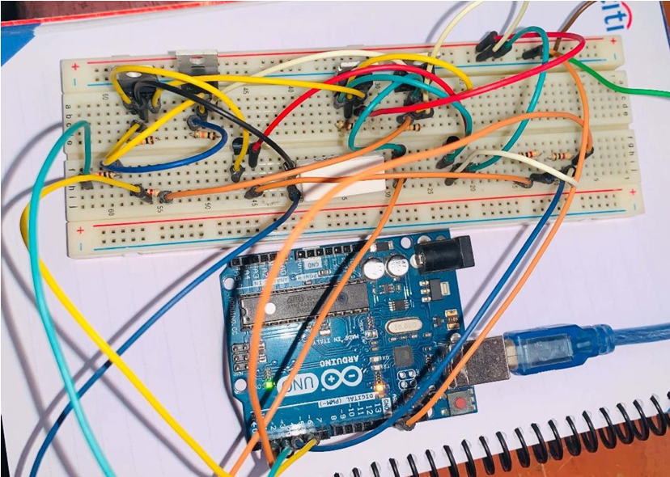
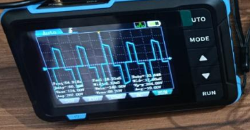

POWER ELECTRONICS / INVERTER DESIGN
3-Level Cascaded H-Bridge Inverter
A practical 12 V DC-to-AC inverter developed using Arduino Uno, IRF3205 and IRF9540N MOSFETs, and BC548 transistor-based gate drivers. The project demonstrates three-level switching, PWM control and experimental waveform verification.
01 / OVERVIEW
Project Overview
This project involved designing and implementing a three-level H-Bridge inverter capable of converting a 12 V DC input into a stepped AC output.
The implemented prototype uses a single H-Bridge stage with four MOSFETs. Arduino-generated switching signals control the bridge through BC548 transistor driver stages. The output consists of three voltage levels: +12 V, 0 V and -12 V.
Although the initial project objective involved a five-level cascaded inverter, practical gate-drive challenges led the team to complete a functional three-level implementation.
02 / PROJECT MEDIA
Hardware, Circuit & Waveform



03 / OBJECTIVES
Project Objectives
- Convert a 12 V DC supply into a stepped AC output.
- Implement MOSFET-based H-Bridge switching.
- Use Arduino Uno for switching-signal generation.
- Use BC548 transistor-based gate drivers.
- Verify the output waveform with a digital oscilloscope.
04 / COMPONENTS
Main Components
Arduino Uno
ATmega328P microcontroller used for switching control.
12 V Battery
DC input power supply.
IRF3205 MOSFETs
Two N-channel switching devices.
IRF9540N MOSFETs
Two P-channel switching devices.
BC548 Transistors
Two NPN transistors used in gate-drive interfacing.
Resistors & Breadboard
Gate biasing, load connection and prototype assembly.
05 / WORKING PRINCIPLE
H-Bridge Operation
The four MOSFETs are arranged in an H-Bridge configuration. The Arduino controls the switching sequence to reverse current through the load and generate alternating polarity.
Positive Output
The appropriate diagonal MOSFET pair conducts, producing approximately +12 V across the load.
Zero Output
A zero-voltage switching state is inserted between positive and negative output intervals.
Negative Output
The opposite diagonal MOSFET pair conducts, producing approximately -12 V across the load.
Switching Control
Complementary control signals and dead-time intervals are used to reduce the risk of simultaneous conduction in a bridge leg.
06 / TESTING & RESULTS
Experimental Results
The inverter output was observed using a digital oscilloscope. The measured waveform demonstrated three voltage levels and an output frequency close to the intended 50 Hz.
Measured output frequency
Target frequency: 50 Hz
Output levels: +12 V, 0 V and -12 V
07 / CHALLENGES
Implementation Challenges
- The initial five-level inverter design worked in simulation but did not operate successfully on hardware.
- Gate-drive timing and switching reliability required careful consideration.
- Slight asymmetry was observed between the positive and negative waveform peaks.
- The measured output frequency differed from the intended 50 Hz.
08 / FUTURE IMPROVEMENTS
Potential Improvements
- Implement the originally planned five-level inverter.
- Use dedicated MOSFET gate-driver ICs.
- Move from breadboard to a custom PCB.
- Improve switching timing and waveform symmetry.
- Extend the design to higher voltage and power ratings.
09 / TECHNICAL LEARNING
Engineering Learning
This project provided practical experience in DC-to-AC conversion, H-Bridge topology, MOSFET switching, gate-driver interfacing, Arduino-based control, waveform measurement and hardware troubleshooting.
10 / DOCUMENTATION
Project Report
View the complete technical report, including the circuit design, component specifications, implementation details and experimental waveform.
View Full Project Report ↗